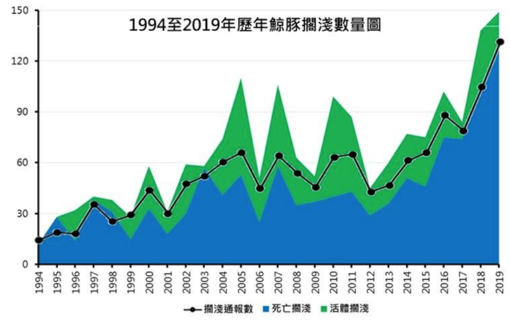
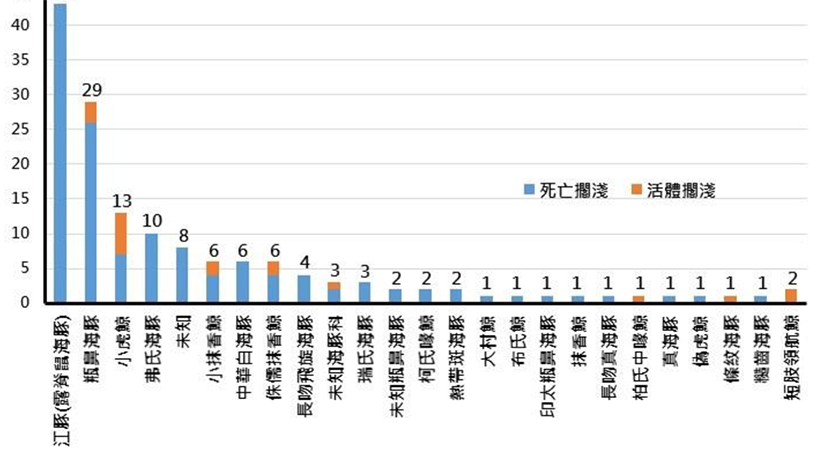
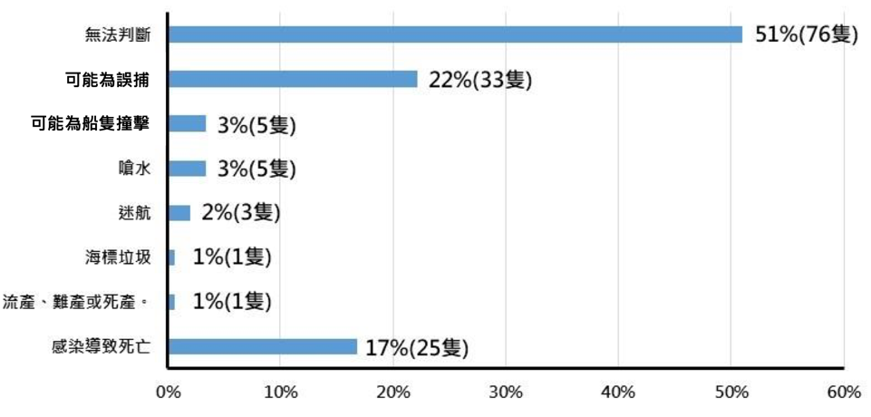

根據目前各地區的相關新聞報導與研究，世界各地區的鯨豚擱淺事件都有逐漸增加的趨勢，以下就分別各地區的資料進行討論。
歐洲
根據BBC於2019年的報導，在2011-2017年，英國海岸發生了4896件鯨豚擱淺件，其中有52件集體擱淺，相比前七年的數據上升了15%，而光2017年的擱淺事件就多達1000件。已知原因包括漁業受傷、感染性疾病以及塑膠汙染等等，其中又以疾病與意外捕撈造成的死亡佔多數。專家尚未找出擱淺案例增加的確切原因，認為其與近年部分鯨豚數量的增加也有關聯。
另根據2002-2014年於愛爾蘭海岸記錄到的擱淺事件，於該區域最常見的擱淺鯨豚品種依序為 common dolphin (佔紀錄中的25.7％)、harbour porposie (22.2%)、long-finned pilot. whale (8.8%)、striped dolphin (6.9%) 以及bottlenose dolphin (6.9%)。而且擱淺事件總數逐年呈現線性上升的趨勢，其中又以 common dolphin 的上升趨勢最高（圖一）。且除了愛爾蘭海岸外，歐洲其他地區如法國、德國、荷蘭、英國、西班牙等也都有common dolphin和harbour porposie 擱淺事件增加的狀況發生（McGovern et al. 2018）。
美洲
從1968-2020年，智利近50年紀錄之擱淺事件共有 436 件，包括來自 8 科、21 屬、35種的鯨豚。多數(約佔總數94%)為單獨擱淺(少於2隻)，18件集體擱淺以及9件稀少的超大型擱淺(多達25隻)。數據顯示所有案例分散於50年間，並且在少數幾年出現峰值，各個年間又以冬、夏為好發季節，但案例數量有隨時間增長的趨勢，尤其近10年的增加的最多（圖二）（Alvarado-Rybak et al. 2020）。

圖二、智利從 1968-2020 年紀錄之擱淺事件，案例數量有隨時間上升趨勢，以近10年增加的最多（棕線代表擱淺個體數量，藍線代表擱淺事件數量）（Alvarado-Rybak et al. 2020）。
美國國家海洋漁業局（National Marine Fisheries Service, NMFS） 曾在2010年針對北墨西哥灣的鯨豚族群狀態發布「不尋常死亡事件警告（Unusual Mortality Event, UME）」。2010年4月20日發生了 ‘Deepwater Horizon’ （DWH）漏油事件，因此大量生物受到影響，在2002-2009年得紀錄中，顯示北墨西哥灣（包含Florida、Alabama、Mississippi、Louisiana等區域）每年平均發生75件擱淺案例，而在事件發生後四年（2010-2014），這些區域每年都發生超過2001-2009年年平均值的兩個標準差（圖三、表一）（Litz et al. 2014）。
| Location | Historical average | 2010(Feb-Dec) | 2011 | 2012 | 2013 | Grand total |
|---|---|---|---|---|---|---|
| FL Panhandle | 21 | 33 | 33 | 29 | 26 | 121 |
| AL | 14 | 25 | 59 | 30 | 26 | 140 |
| MS | 20 | 64 | 111 | 49 | 50 | 274 |
| LA | 20 | 137 | 163 | 94 | 145 | 539 |
| Grand total | 75 | 259 | 366 | 202 | 247 | 1074 |
表一、墨西哥灣北部鯨魚擱淺數據，包含2010年2月至2013年1月資料，其中FL代表Florida、AL代表Alabama、MS代表Mississippi、LA代表Louisiana（Litz et al. 2014）。
圖三、Florida、Alabama、Mississippi、Louisiana四個地區2010-2013年各個月份的擱淺事件數據。紅線代表所有的鯨豚擱淺事件數量，藍線代表2002-2009年各個月份的鯨豚擱淺數量平均值，綠線代表身長小於115公分的瓶鼻海豚（Tursiops truncates, Tt）不正常死亡事件（unusual mortality event, UME）數量（Litz et al. 2014）。
非洲
南非誇祖魯-納塔爾省海岸的擱淺紀錄，從2015年的40件躍升至2016的74件，其中有十件為大型鯨豚，大多數為個體擱淺，整體呈上升趨勢（圖四）。根據Olbers於2017年發表之觀察報告，由於冬季鯨豚的遷徙造成擱淺案例季度增加，是無可避免的自然因素，但其餘因未知原因甚至明顯人為相干原因導致的活體與死亡擱淺也確實隨之上升。2008年以後通報的擱淺案件多達412件（Olbers, 2017）。
圖四、南非誇祖魯-納塔爾省海岸的1995-2016年之動物擱淺紀錄，其中黑色代表鯨魚擱淺事件，灰色代表海豚擱淺事件（Olbers, 2017）
台灣
根據海洋保育署與中華鯨豚協會的計畫，自2015年以後擱淺通報數目幾乎呈線性成長，2017年通報數不超過100件，但2019年總共登錄了139件的擱淺案件，共包含149隻擱淺動物（圖五），其中活體擱淺比例佔40%，共計22個種類，其中比例最高的前三者為江豚（29%）、瓶鼻海豚（19%）、小虎鯨（9%）（圖六）。救援執行單位判定，除了不明原因的擱淺以外，感染致死與意外捕撈導致的鯨豚擱淺各佔總體事件比例的23%與17％（圖七），尤其是江豚死亡數近年顯著增加，很可能與海上人為活動變得頻繁有關（海洋保育署，2020）。
-

圖五、1994-2019年紀錄之台灣鯨豚擱淺數量（海洋保育署，2020）。
-

圖六、2019年台灣擱淺鯨豚種類統計（海洋保育署，2020）。
-

圖七、2019年台灣擱淺鯨豚死亡原因統計（n=149）（海洋保育署，2020）。
參考資料
- 全國鯨豚擱淺救援處理計畫。2020年。主辦單位：海洋委員會海洋保育署 ; 提案單位：中華鯨豚協會、國立成功大學。https://www.oca.gov.tw/ch/home.jsp? id =220&paren tpath=0,2,219（查詢日期：2021/6/1）。
- Alvarado-Rybak, M., Toro, F., Escobar-Dodero, J., Kinsley, A. C., Sepúlveda, M. A., Capella, J., ... & Mardones, F. O. (2020). 50 Years of Cetacean Strandings Reveal a Concerning Rise in Chilean Patagonia. Scientific reports, 10(1), 1-10.
- Briggs, H. (2019). Stranded whales: Numbers on the rise around UK shores. BBC News. https://www.bbc.com/news/science-environment-49596734 (search date：2021/6/1).
- Litz, J. A., Baran, M. A., Bowen-Stevens, S. R., Carmichael, R. H., Colegrove, K. M., Garrison, L. P., ... & Rowles, T. K. (2014). Review of historical unusual mortality events (UMEs) in the Gulf of Mexico (1990-2009): providing context for the multi-year northern Gulf of Mexico cetacean UME declared in 2010. Diseases of aquatic organisms, 112(2), 161-175.
- McGovern, B., Culloch, R. M., O'Connell, M., & Berrow, S. (2018). Temporal and spatial trends in stranding records of cetaceans on the Irish coast, 2002–2014. Journal of the Marine Biological Association of the United Kingdom, 98(5), 977-989.
- Olbers, J.M. (2017). Marine strandings: 2016 Annual Report for KwaZulu-Natal. Ezemvelo KZN Wildlife Internal Report, Pietermaritzburg, South Africa. 34pp.